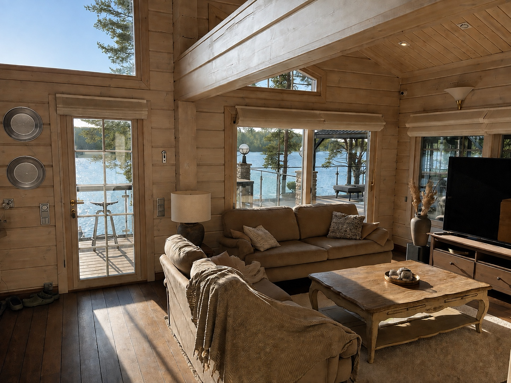
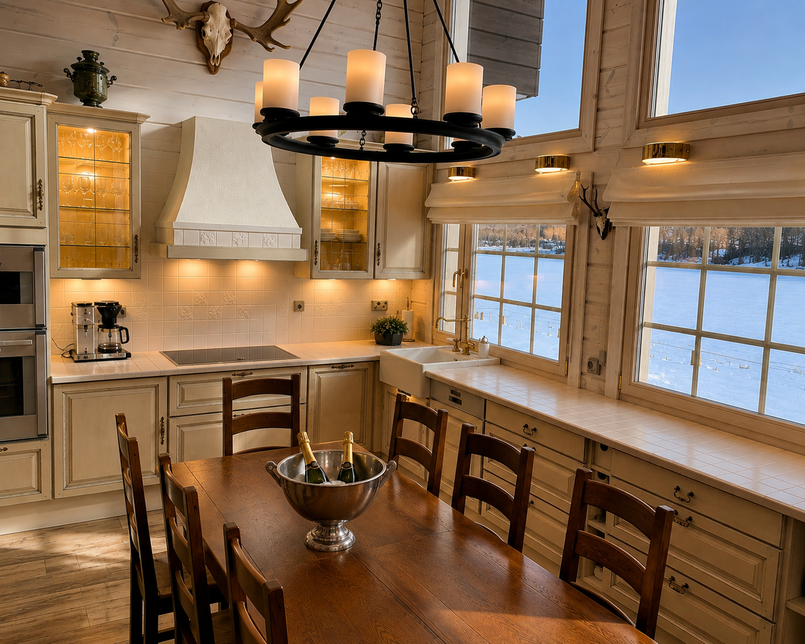
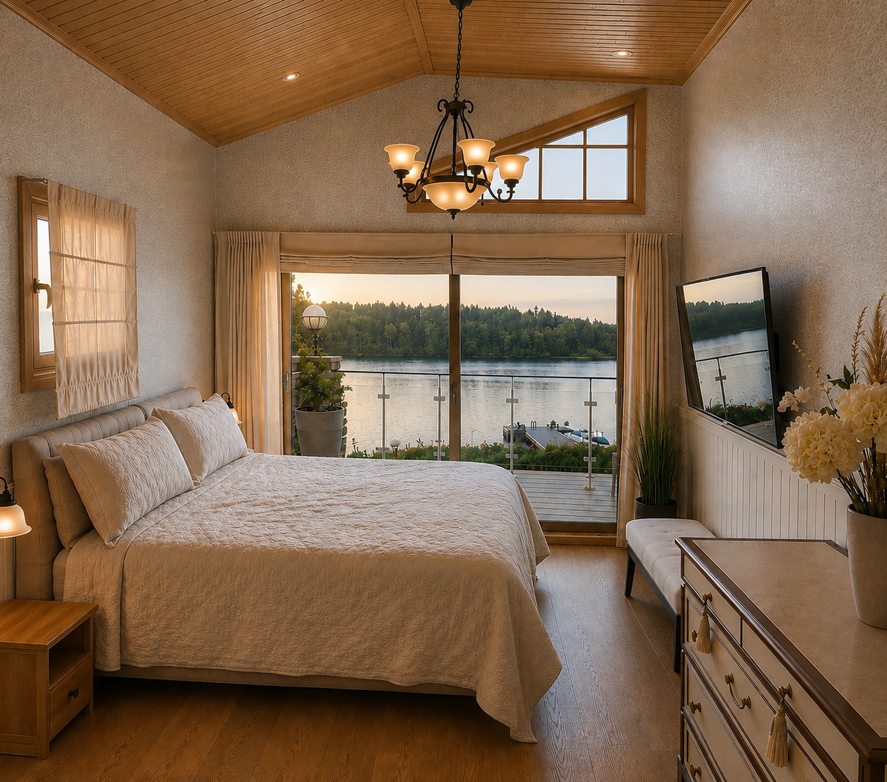
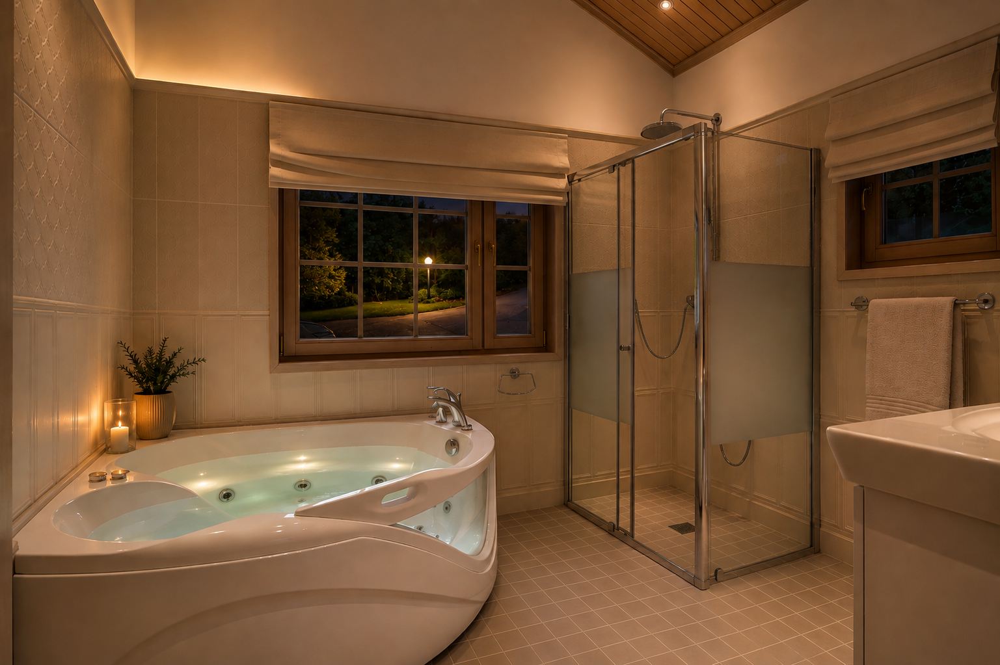
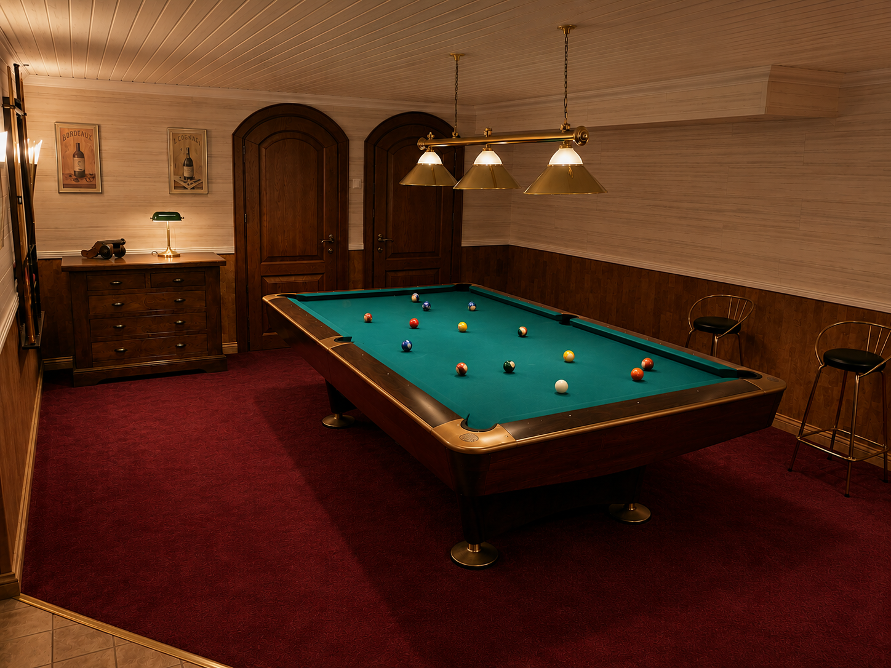

A room open to the lake
The main living room combines height, natural light and a direct visual connection to the terrace and water.

Made for long dinners
Kitchen and dining belong to the same social heart of the villa — practical enough for everyday use, but composed for shared evenings.

Quiet rooms, private views
The private rooms are presented as part of the estate experience rather than as a room inventory: calm materials, privacy and the landscape beyond.

A private place to unwind
The master bathroom continues the same quiet atmosphere with its own whirlpool and warm evening character.

Another kind of evening
Below the main living spaces, the billiard room adds a more informal private world without breaking the character of the house.

The villa after dark
As daylight fades, firelight and warm interiors shift the villa from architecture to atmosphere.